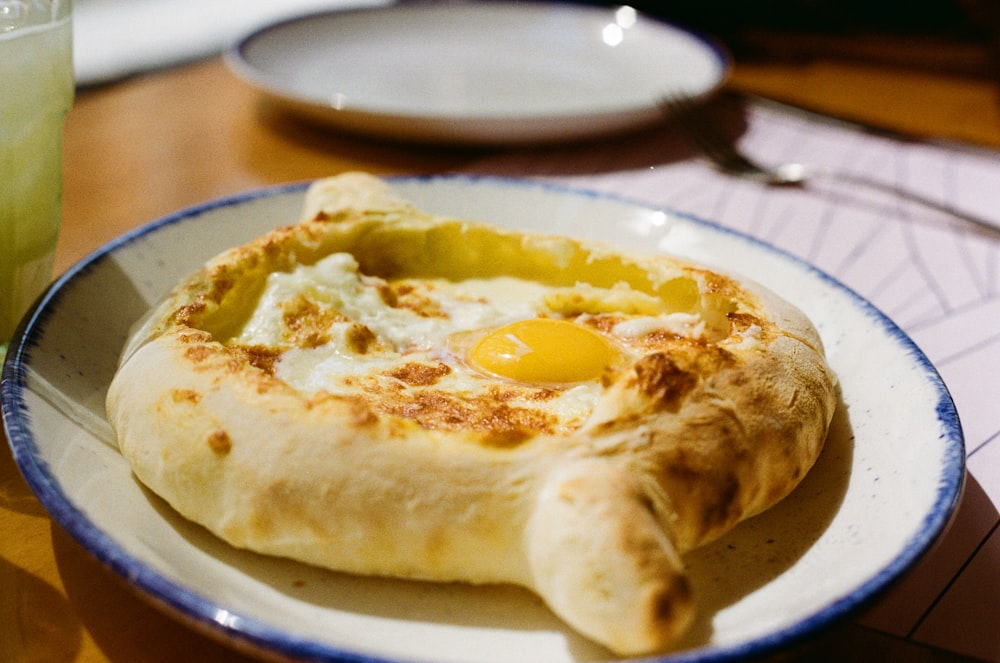
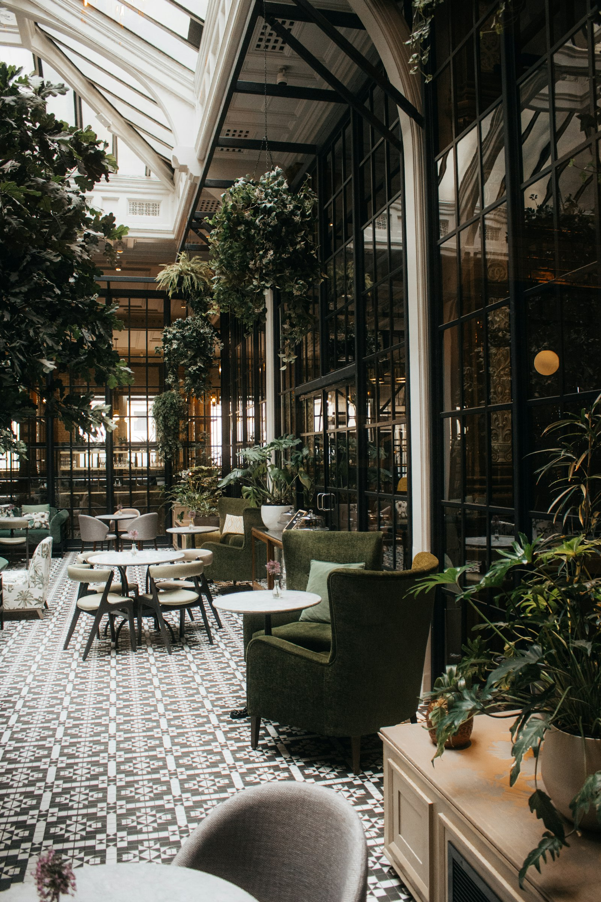
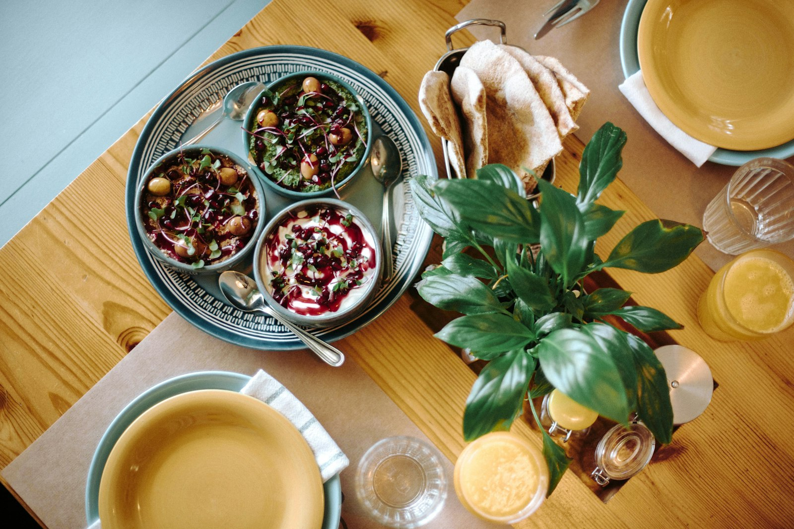
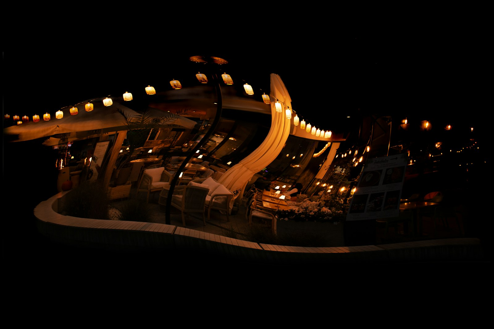
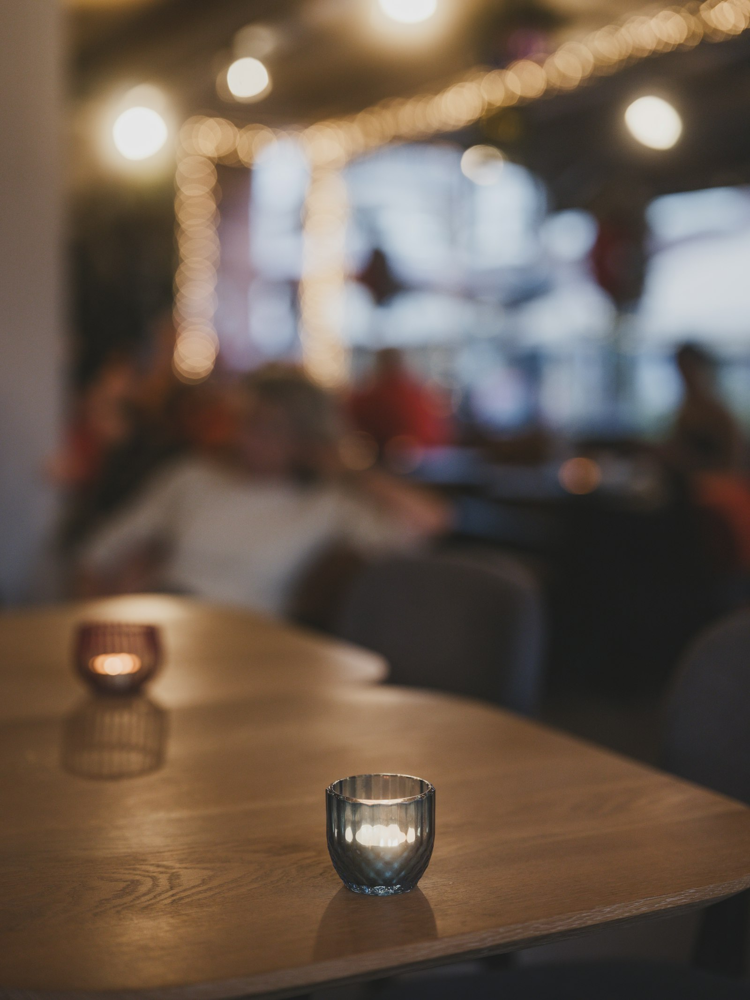
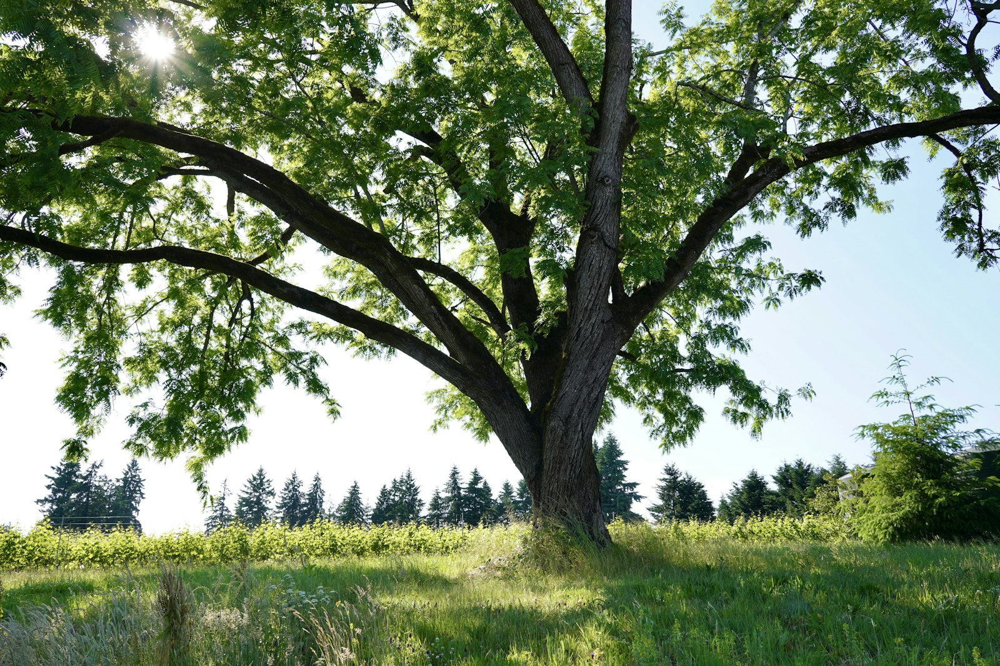

легенда меню
Хачапури по-аджарски
Лодочка с сулугуни и яйцом, которую лепят на глазах у гостя — тот самый рецепт «Дома верблюда».
ул. Баумана, 60 · Казань, 5 минут пешком от площади Тукая
Хачапури из тандыра, чача, живая грузинская музыка и веранда в такой густой зелени, что летом забываешь: вокруг — центр большого города.
О месте
Кафе, бар и банкетный зал под одной крышей — и веранда, укрытая зеленью так плотно, что летними вечерами кажется: рядом море, а не проспект Баумана. По выходным здесь звучит живая грузинская музыка, а в винной карте — чача и вино для тех, кто пришёл не спешить.
До 120 гостей одновременно: столик на двоих, большая компания или закрытый банкет — атмосфера остаётся тёплой в любом составе.
Атмосфера
Зелень веранды, тепло зала и живая музыка по выходным — то, ради чего сюда приходят не только поесть.





Мероприятия
Дни рождения, корпоративы, семейные ужины — отдельный зал, живая музыка и грузинское застолье без суеты общего зала. Мы поможем собрать стол под ваш повод и число гостей.
Что чаще всего хвалят — по 1387 отзывам на Яндекс.Картах
«Встретили тепло, будто ждали именно нас. Хачапури — как в Тбилиси, а живая музыка вечером сделала обычный ужин праздником».
«Отмечали день рождения в банкетном зале — большой компанией, никто не толкался. Официанты подсказали, что взять, и не торопили».
«Веранда — отдельная история: столько зелени, что забываешь, что рядом Баумана. Пина-колада и апероль — на уровне хорошего бара».
«Продукты чувствуются свежими, порции честные. Возвращаемся сюда с семьёй уже не первый раз — атмосфера держит».
Отзывы обобщены по мотивам реальных оценок гостей на Яндекс.Картах, курсивом — иллюстрация, а не дословные цитаты.
Бронирование
Оставьте заявку — перезвоним и подтвердим бронь. Для срочных вопросов проще позвонить.
+7 (903) 388-58-85